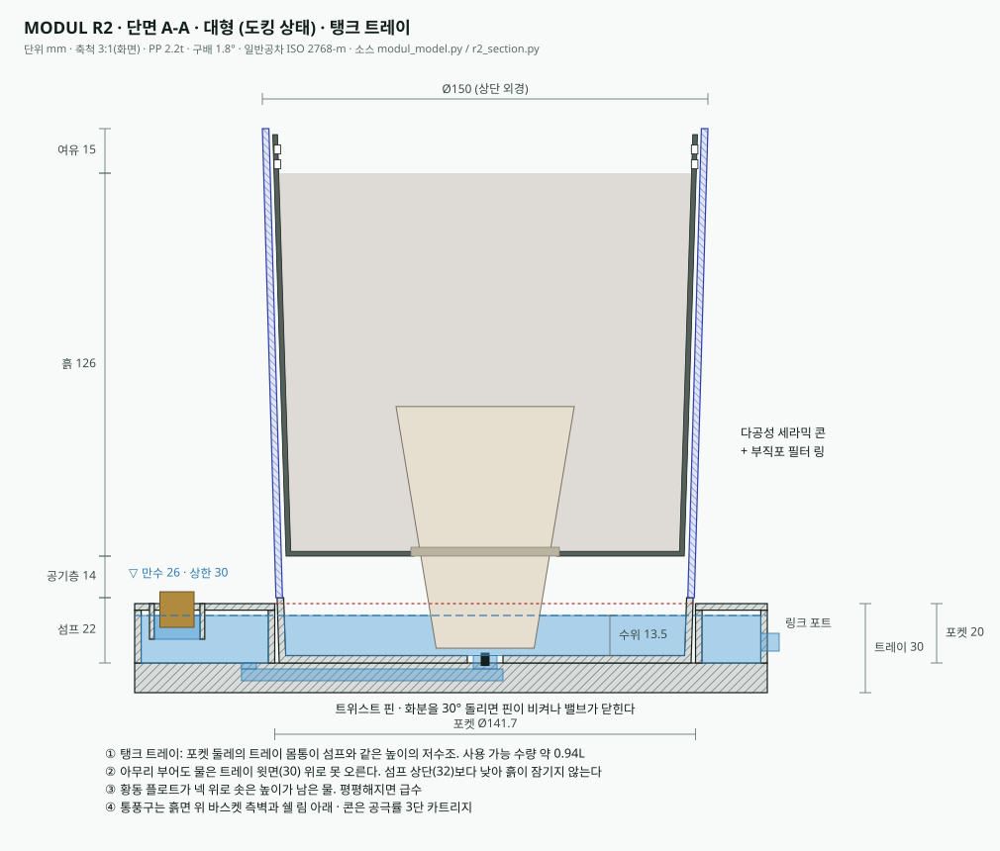

MODUL은 ‘물 주기 걱정 없는 실내 정원’이라는 정확한 문제를 겨눴습니다. 다만 도면, 렌더, 설명서가 서로 다른 제품을 말하고 있고, 몇몇 약속은 물리 법칙과 식물 생리에 어긋납니다. 출시 전 바로잡아야 할 지점과 팔릴 수 있는 지점을 함께 정리했습니다.
설명서 치수(90·135·180mm)와 도면의 구조(외곽 쉘 · 통기 바스켓 · 세라믹 콘 · 하부 섬프 · 도킹 트레이)를 하나의 제작 가능한 형상으로 다시 짰습니다. 화분 지름은 ‘바닥을 맞춰 3.5mm 간격으로 포갠다’는 조건에서 역산했습니다. 드래그로 회전, 휠·핀치로 확대합니다.
| 부위 | 대형 Tall | 중형 Medium | 소형 Low | 비고 |
|---|---|---|---|---|
| 높이 | 180 | 135 | 110 | R1에서 소형 90 → 110 |
| 상단 외경 | 150.0 | 135.8 | 122.8 | 중첩 조건 역산 (벽 2.2, 구배 1.8°, 간격 3.5) |
| 섬프 / 공기층 | 22 / 14 | 22 / 14 | 22 / 14 | 원안 28 / 20 → 수정. 연통관이므로 세 화분이 같아야 함 |
| 유효 흙 깊이 | 126 | 82 | 56 | 90mm 원안 스택이면 소형은 25mm |
| 섬프 저수량 | ≈220 ml | ≈184 ml | ≈151 ml | 설명서 ‘150~200ml’와 부합 |
| 도킹 트레이 | 455 × 175 × 30 · 포켓 깊이 20 | 원안(렌더)은 두께 약 15의 평판 | ||
부품별 STL과 파라메트릭 소스: research/modul-planter/modul_model.py, stl/*.stl (13개 파일). 치수를 바꾸고 다시 실행하면 전 부품이 갱신됩니다.
심각도는 출시 불가 그대로 내면 제품이 작동하지 않거나 표시광고 문제가 되는 것, 수정 권장 사용 경험이나 원가를 해치는 것으로 나눴습니다.
연통관에서 물은 주수구 높이 이상으로 올라가지 않습니다. 렌더 속 트레이는 두께 15mm 남짓의 평판이고 황동 캡은 그 윗면에 붙어 있습니다. 화분 섬프의 바닥은 트레이 윗면보다 높으니, 600ml를 부어도 물은 트레이 안에 머물거나 주수구로 넘칩니다. ‘트레이 한 곳에 부으면 세 화분에 분배’라는 핵심 약속이 성립하지 않습니다.
수정안 화분 바닥이 20mm 들어앉는 포켓형 트레이(두께 30)로 바꿔 섬프 수위가 트레이 내부 수위와 같은 높이에 오게 합니다. 주수구 둘레에 오버플로 턱을 두면 최고 수위가 자동으로 제한됩니다. 3D 모델은 이 수정안 기준입니다.
권장 급수량 600ml를 세 화분이 나눠 씁니다. 실내 몬스테라(약 1.6L 흙)는 하루 30~60ml, 필레아는 15~30ml를 증산합니다. 합하면 600ml는 대략 1~2주 분량입니다. 4주를 버티려면 1.5~2.5L가 필요합니다. 아래 계산기로 조합별로 확인할 수 있습니다.
수정안 문구를 “7~14일에 한 번 (식물·계절에 따라 다름)”으로 바꾸고 수위 표시창을 답니다. 4주 주기가 꼭 필요하면 트레이 아래 1.5L 서브 탱크를 옵션으로 둡니다.
연통관은 세 화분의 수위를 같게 만듭니다. 렌더의 하워르티아는 하루 몇 ml만 쓰고 건조기를 거쳐야 하는 식물인데, 같은 높이의 물이 세라믹 콘을 통해 계속 올라옵니다. 몬스테라에게 맞춘 수분이 하워르티아에게는 과습입니다. 설명서는 선인장류에 “급수 주기를 6~8주로”라고 하지만 트레이를 공유하면 한 화분만 주기를 바꿀 방법이 없습니다.
수정안 포트마다 개폐 레버(또는 화분을 반쯤 들어 올린 ‘휴면 위치’)를 둬 개별 차단을 허용합니다. 세라믹 콘을 공극률 2단계(관엽용·다육용)로 나눠 판매하고, 대표 연출 이미지는 같은 물을 좋아하는 식물로 다시 찍습니다.
도면대로 섬프 28mm, 공기층 20mm, 바스켓 바닥을 쌓고 림 아래 15mm를 비우면 소형 화분의 흙 깊이는 25mm입니다. 식물이 서 있을 수 없는 깊이입니다. 섬프 높이만 줄이면 해결될 것 같지만, 연통관에서는 가장 낮은 섬프가 전체 최고 수위를 정하므로 세 화분의 섬프 높이가 같아야 합니다.
수정안 세 화분 모두 섬프 22 / 공기층 14로 통일(소형 흙 깊이 36mm). 소형 라인업을 110mm로 올리면 흙 깊이 56mm로 여유가 생깁니다.
에어 프루닝은 뿌리 끝이 건조한 공기에 닿아 말라야 생깁니다. 물 위 14~20mm의 밀폐된 공간은 상대습도가 100%에 가까워, 뿌리는 마르지 않고 슬릿을 지나 물속으로 내려갑니다. 수경 뿌리가 섬프에 차면 “뿌리가 물에 잠기지 않는다”는 FAQ와 모순되고, 세척 시 바스켓이 빠지지 않습니다. 위에서 물을 부으면 흙 입자도 슬릿으로 흘러 “하부 수조는 유기물이 닿지 않는다”는 설명과 어긋납니다.
수정안 슬릿을 바스켓 측벽 상부(외기와 통하는 위치)로 옮기고 바닥은 세라믹 콘 구멍만 남깁니다. 바스켓 바닥에 부직포 링을 넣어 흙 유실을 막습니다.
도면은 사각형 쉘에 폭 380mm, 높이 1,330mm 치수가 적혀 있고 렌더는 원형 화분입니다. 도면은 섬프를 ‘초음파 융착’한다고 하는데 설명서는 섬프를 ‘반 바퀴 돌려 분리’합니다. 융착한 부품은 분리할 수 없습니다. 설명서의 마그네틱 가이드는 도면에 없습니다. 표제란 날짜(03/00, 22/19)와 제목(ENGINEERING TITLE LINKS)도 금형 발주 문서로 쓸 수 없는 상태입니다.
수정안 섬프는 바요넷 결합 + O링으로, 융착은 트레이 상·하판에만 씁니다. 도면은 위 3D 모델 치수로 다시 그려 표제란을 채웁니다.
“과습이 원천 차단됩니다”, “뿌리 썩음은 불가능합니다”, “단 한 방울도 흐르지 않습니다”는 검증할 수 없는 단정입니다. PP 사출로 만든 ‘로우 테라코타’를 소재 설명 없이 쓰면 소비자가 토분으로 오인할 수 있습니다.
수정안 “공기층과 세라믹 콘이 과습 위험을 크게 낮춥니다”처럼 정도로 말하고, 누수는 시험 조건(예: 만수 상태 분리 100회)을 함께 적습니다. 색상명은 ‘테라코타 컬러(PP)’로 표기합니다.
R1은 검토 의견 대부분을 받아들였습니다. 포켓형 트레이(455×175×30, 포켓 20), 바요넷 섬프와 O링, 회전식 차단 다이얼, 세라믹 콘 필터 링, 소형 110mm, 섬프 22 / 공기층 14 통일이 모두 반영됐습니다. 남은 문제는 물이 어디까지 차오르는지가 정해지지 않았다는 것입니다.
단면 A-A에서 물이 포켓 전체를 채우고 트레이 상단(약 58mm)까지 올라옵니다. 이 높이는 섬프 22와 공기층 14를 넘어 바스켓 바닥 위이므로 흙이 물에 잠깁니다. 포켓을 열린 물그릇으로 쓰면 화분을 들 때마다 물이 따라 올라오고, 빛이 들어 이끼가 낍니다.
수정안 포켓은 마른 공간으로 두고 물은 닫힌 유로 → 포펫 밸브 → 섬프로만 다니게 합니다. 주수구를 스탠드파이프로 만들고 넘치는 턱을 섬프 바닥 위 18mm(섬프 상단 4mm 아래)에 둡니다. 이 높이가 시스템 전체의 최고 수위가 됩니다. 아래 R2 단면도가 이 구조입니다.
등각도의 트레이에 황동 리필 캡도, 물을 넣을 구멍도 없습니다. 포켓도 하나만 그려져 있어 세 포트를 잇는 유로를 확인할 수 없습니다.
수정안 트레이 모서리에 스탠드파이프형 주수구(R1-01)와 포켓 3개, 그 아래 유로를 그립니다.
‘상부 둘레 통풍구’ 지시선이 바요넷 섬프 부품을 가리킵니다. 섬프에 구멍을 내면 물이 그 높이에서 새고 증발도 빨라집니다. 에어 프루닝용 통풍구는 흙면보다 위, 바스켓 측벽 상단과 쉘 림 바로 아래에 있어야 바깥 공기와 통합니다.
단면 상단의 180mm와 135mm는 높이 값이 지름 자리에 들어간 것입니다(대형 상단 외경은 150). 단면 바닥 폭 295mm는 트레이 폭 175mm보다 넓고, 등각도에는 근거 없는 350mm가 있습니다. 세로 치수 ‘56/82/126mm’는 흙 깊이인데 높이 58mm 구간에 붙어 있습니다. 용량표는 행이 중복됐습니다(소형 151, 중형 184, 대형 220ml가 맞습니다). 소형이 110mm가 되면 중첩 조건상 상단 외경은 122.8mm입니다. 121.5로 두면 간격이 3.5가 아니라 4.2mm가 되어 덜컹거립니다.
‘TOSSS FOR’, ‘NOREABJAIL BEITOTAL’ 같은 표제란 항목과 DFM 노트의 한글·영문 문장이 깨져 있습니다. 이미지 생성 도구로 만든 그림으로 보입니다. 구조를 소통하는 데는 충분하지만, 금형사에는 CAD에서 뽑은 도면이 가야 합니다.
수정안 아래 R2 단면도는 3D 모델과 같은 파라미터 파일에서 생성했습니다. 치수를 바꾸면 모델과 도면이 함께 바뀝니다. 금형 견적용으로는 이 값을 기준으로 CAD(STEP)를 작성합니다.

트레이 조합을 바꿔 600ml가 며칠 가는지 확인합니다. 하루 소비량은 실내 15~25℃, 간접광 기준 추정 범위의 중앙값입니다. 섬프가 비어도 흙에 남은 수분으로 2~3일은 더 버팁니다.
MODUL이 파는 것은 화분이 아니라 ‘물 주는 날을 잊어도 되는 거실’입니다. 저면관수 화분은 이미 이케아 VÅRDTRÄD처럼 1만 원대에도 있습니다. 그래서 차별점은 자동 급수 자체가 아니라 세 화분을 하나의 오브제로 묶는 도킹 트레이와 보관할 때 하나로 포개지는 형상에 있습니다.
과습·물 주기 망각은 실내 식물 고사의 가장 흔한 원인. 메시지가 바로 통합니다.
저면관수는 흔함. 일괄 도킹 + 단독 분리 + 중첩 보관의 조합이 유일한 자산이며, F-01 해결이 전제입니다.
세 색·세 질감·황동 포인트는 인테리어 사진에서 잘 읽힙니다. 선물 수요와 맞습니다.
화분당 부품 4개 × 3 + 트레이 2판, 금형 약 14벌. 밸브·자석·황동 캡은 수입 단가 변동을 받습니다.
F-01·02·03이 그대로면 첫 2주 안에 리뷰에서 드러납니다. 저면관수 제품은 리뷰가 곧 매출입니다.
해외 프리미엄 자동급수 화분 1개가 약 65~90달러(LECHUZA, 미국 소매가). 3종+트레이 세트를 그 1.5배 안쪽에 두면 ‘하나 값에 세트’가 성립합니다. 국내 가격은 확인하지 못해 추정입니다.
B2C 단품보다 먼저 볼 시장은 공간 단위 구매입니다. 모델하우스·호텔 객실·병원 대기실처럼 관리 인력이 적고 식물이 죽으면 공간 인상이 무너지는 곳에서는 ‘2주 무관리’가 그대로 비용 절감으로 계산됩니다. 채널그린의 가든디자이너 네트워크가 실내 그린 연출을 맡을 때 납품 표준 화분으로 묶으면 초기 물량을 B2B로 확보할 수 있습니다.
아이디어는 팔립니다. 지금의 약속은 팔리지 않습니다. 물이 어디까지 올라가는지, 식물이 하루에 얼마를 마시는지를 숫자로 확인하고 나면, MODUL은 ‘관리하지 않아도 되는 정원’이라는 말을 정직하게 할 수 있는 몇 안 되는 실내 화분이 될 수 있습니다.
참고: LECHUZA 미국 소매가(Walmart) · IKEA Korea 자가급수 화분 · GMI 화분·플랜터 시장(2025년 183억 달러). 식물별 소비량은 일반적인 실내 원예 경험치에 근거한 추정이며 생육 시험으로 대체해야 합니다.